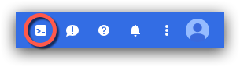

Getting Started
In this activity you will:
- Launch the lab in Qwiklabs
- Launch the Google Cloud Shell
WARNING: You must use the credentials provided by Qwiklabs for this lab. Failure to do so may result in charges to your personal Google account. You should either log out of Google entirely before proceeding or open an Icognito window in the Google Chrome web browser.

Log into Qwiklabs
Navigate to the Qwiklabs URL in your web browser
https://paloaltonetworks.qwiklab.com
Log in with your Qwiklabs credentials (sign up if you are new to Qwiklabs).

Launch the lab
Confirm that the lab entitled Introduction to Terraform and Ansible is listed under In Progress on the welcome screen.
Click on the Introduction to Terraform and Ansible lab to add it to your My Learning inventory.

Click on the Introduction to Terraform and Ansible lab in the My Learning page.

Click on Start Lab in the upper right corner of the main lab page.

Make note of the Username, Password, and GCP Project ID fields that are generated.

Log into Google Cloud Platform
Click on the Open Google Console button located under the Connection Details. A new browser tab will open and take you to the Google login page.
Log in using the credentials provided on the Qwiklabs launch page for this specific lab.

Click Accept on the logon banner page to accept the Terms of Service.

Since this is a temporary lab account you can skip adding account recovery options by clicking Done.

elect your country, opt out of email updates, and accept the updated Terms of Service and click Accept.

Launch Google Cloud Shell
Click the menu icon in the upper left-hand corner of the Dashboard to hide the sidebar menu.

In the upper right-hand corner of the Dashboard, click on the Cloud Shell icon. 
A welcome page is displayed when launching the Cloud Shell for the first time. Click Start Cloud Shell to proceed.

The Cloud Shell will appear at the bottom of the Dashboard. Wait a few moments as it provisions and connects to the environment.
You can click on the Open in New Window icon in the Cloud Shell toolbar for a full-sized Cloud Shell display in a new browser tab.

You are now ready to proceed with the lab configuration.